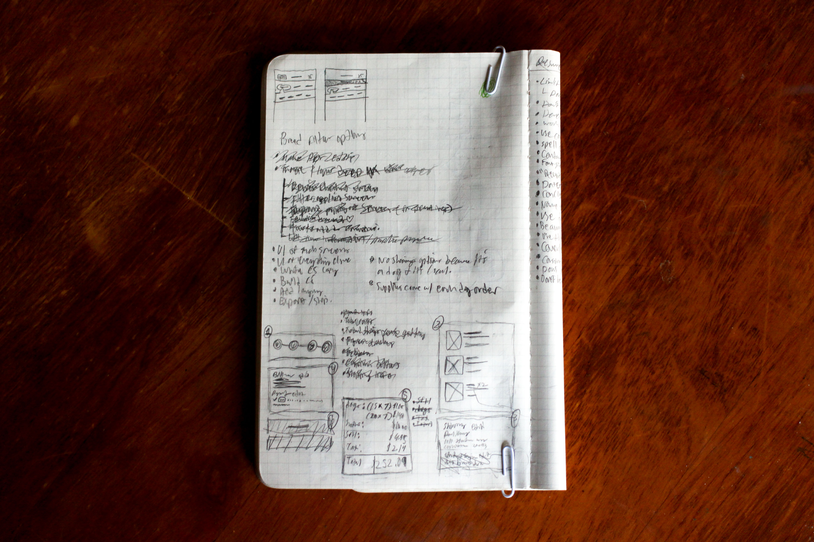
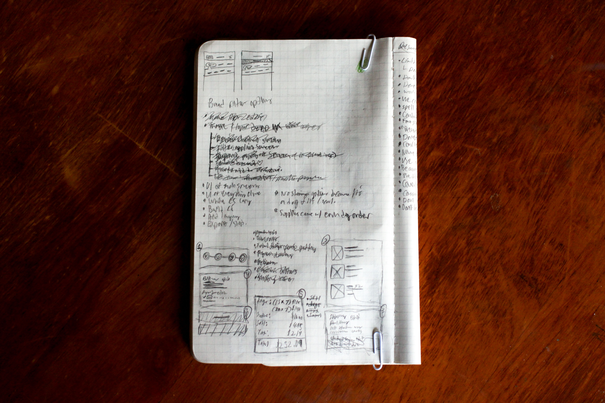

INSPIRATION
This year, I took a UX class at UGA, taught by
Matt Smith from MDS. After going through his
AIUX module, we were tasked with creating an original app of our own design. Instead of running with a more serious idea, I decided to do something a bit more fun. A friend jokingly asked me to make an app for renting “good” dogs. I thought it was ridiculous and couldn’t seriously work… so why not make it for fun?
WHY THIS APP CAN'T EXIST
Where do I even begin with this legal nightmare? What would happen if a dog ran away while in a customer's care, or if the dog accidentally bit someone, or if the dog got sick, or someone was recruiting for an underground dog fighting ring, or, god forbid, it died! When you pass around a living thing to a bunch of strangers, things are bound to go wrong.

 
